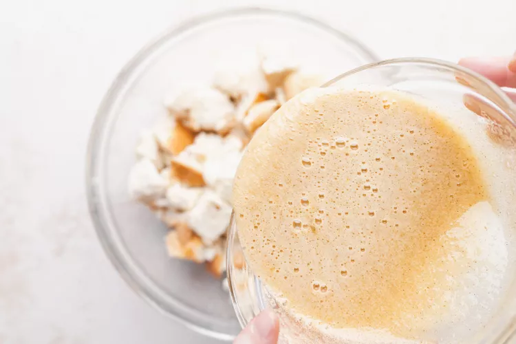
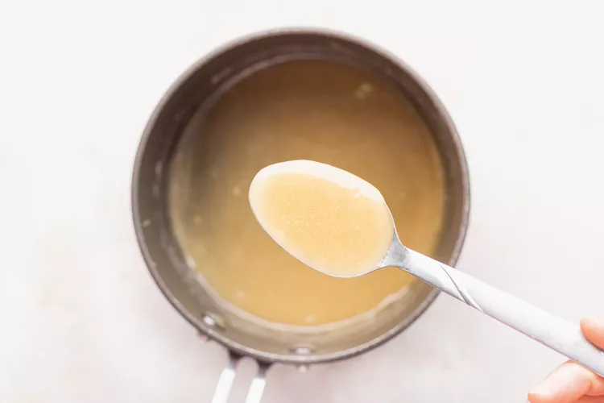
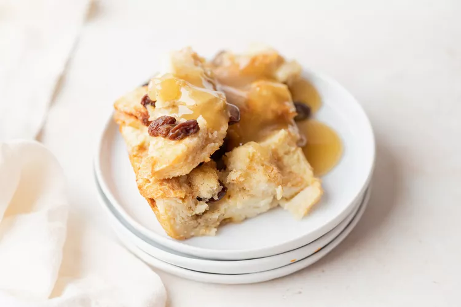

Bread pudding is a bread-based dessert popular in many countries' cuisines. It is made with stale bread and milk or cream, generally containing eggs, a form of fat such as oil, butter or suet and, depending on whether the pudding is sweet or savory, a variety of other ingredients.
In a small bowl, combine the raisins with 1/4 cup bourbon. Cover and soak for 1 to 2 hours. The raisins should soak up most of the bourbon in this time (there may be some bourbon left in the bowl when they're done soaking).
Preheat the oven to 350°F.
Place milk in a large mixing bowl and add the cubed bread. Press the bread into the milk with your hands until the bread is completely saturated (the bread may not absorb all the milk).
In a separate bowl, whisk the eggs, then whisk in the sugar, vanilla, allspice, and cinnamon. Pour over the bread and milk mixture. Add the bourbon-soaked raisins. Stir gently to combine.

Pour the melted butter into the bottom of a 9x13 baking pan. Coat the bottom and the sides of the pan well with the butter. Pour the bread milk and egg mixture into the baking pan. Bake at 350°F for 35 to 45 minutes, until the liquid has set. The pudding is done when the edges start getting a bit brown and pull away from the edge of the pan.
While the bread pudding is cooking make the bourbon sauce. Melt the butter in a medium saucepan on low heat. Add the sugar and egg and whisk to blend well. Slowly cook over low heat, stirring constantly, until the mixture thickens enough to coat the back of a spoon, then remove from heat. Do not allow the mixture to simmer or the sauce will curdle. (By the way, if your sauce curdles, just take it off the heat and blend it smooth in a blender.)
Whisk in bourbon to taste. Whisk again before serving. The sauce should be soft, creamy, and smooth.

Serve the bread pudding with bourbon sauce on the side; pour on to taste.
Bread pudding is best served right away after it's finished baking. However, leftovers can be kept for up to 5 days refrigerated and can be reheated in the microwave.
To reheat,warm individual portions in 1-minute bursts in the microwave until warmed through. The sauce can be drizzled over top and reheated along with the individual slice.
We do not recommend freezing bread pudding.
